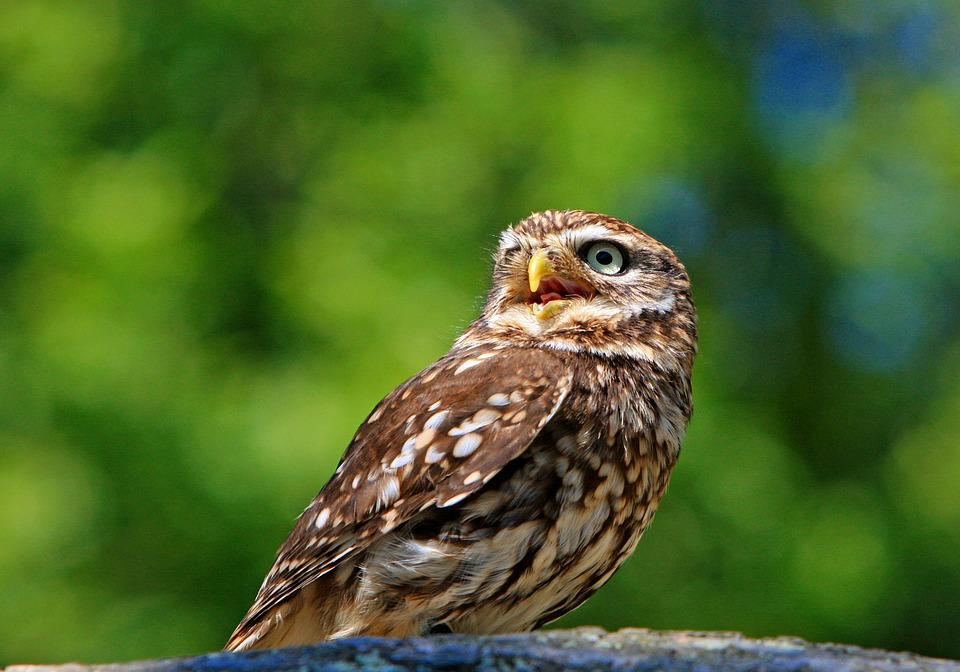

Owls are birds from the order Strigiformes[1] (/ˈstrɪdʒəfɔːrmiːz/), which includes over 200 species of mostly solitary and nocturnal birds of prey typified by an upright stance, a large, broad head, binocular vision, binaural hearing, sharp talons, and feathers adapted for silent flight. Exceptions include the diurnal northern hawk-owl and the gregarious burrowing owl.
Owls are divided into two families: the true (or typical) owl family, Strigidae, and the barn-owl family, Tytonidae.[2] Owls hunt mostly small mammals, insects, and other birds, although a few species specialize in hunting fish. They are found in all regions of the Earth except the polar ice caps and some remote islands.
